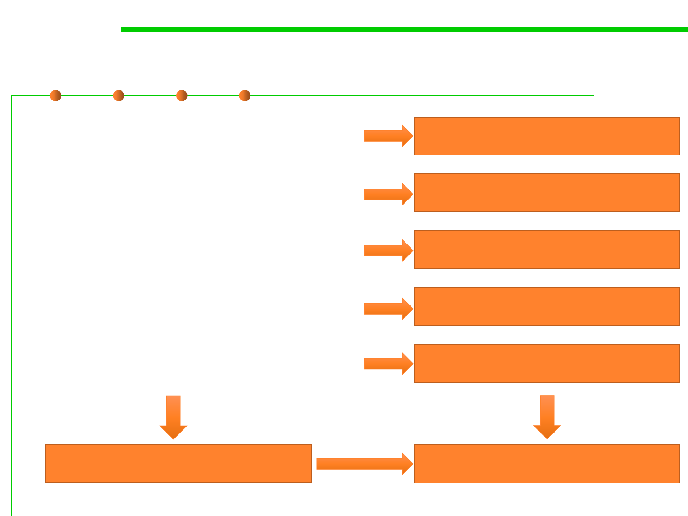

1.2 Quality Objectives of Software Construction
Quality considerations of this course
▪ Elegant and beautiful code easy
to understand, understandability
▪ Design for/with reuse cheap
for develop
▪ Low complexity ready for
changes, easy to extend
▪ Robustness and correctness
safe from bug, not error-prone
▪ Performance and efficiency
efficient to run
Chapter 4 Understandability
Chapter 5 Reusability
Chapter 6
Extendibility/Maintainability
Chapter 7
Robustness/Correctness
Chapter 8
Efficiency/Performance
Chapter 3 ADT and OOP
Chapter 9 Refactoring